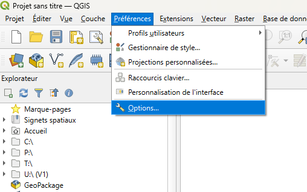
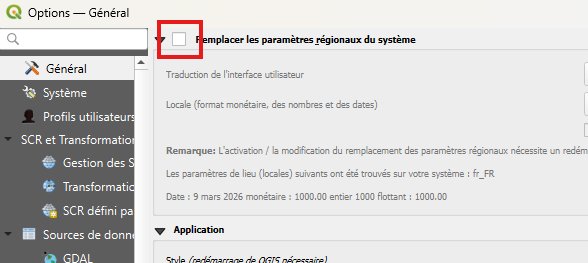
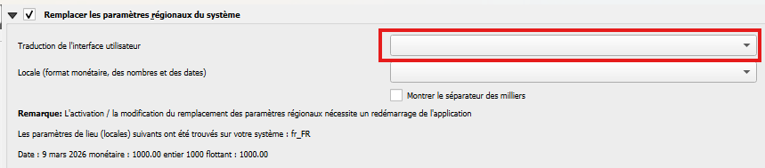

Etape 1
Ouvrir les options de QGIS
Français: aller dans le menu Préférences > Options Anglais: aller dans le menu Settings > Options
Guide pratique QGIS
Ce guide simple permet de tester la mise en page tout en couvrant une action fréquente: passer QGIS en francais, anglais ou autre langue disponible.

Etape 1
Français: aller dans le menu Préférences > Options Anglais: aller dans le menu Settings > Options

Etape 2
Vous devriez être dans l'onglet Generale par défaut si ce n'estpas le cas il faut vous rendre à l'intérieur. Français: cocher la case Remplacer les paramètres régionaux du système Anglais: cocher la case Override System Locale

Etape 3
Cherchez la section Langue ou Language. Français: séléctionner votre langue dans le menu déroulant Traduction de l'interface utilisateur Anglais: séléctionner votre langue dans le menu déroulant User interface translation
Etape 4
Cliquez sur le bouton OK pour sauvegarder les changements. Redémarer Qgis pour que le changement de langue soit effectif.
Si la langue ne change pas, retourne dans Parametres > Options, verifie la case de locale et refais un redemarrage complet de QGIS.